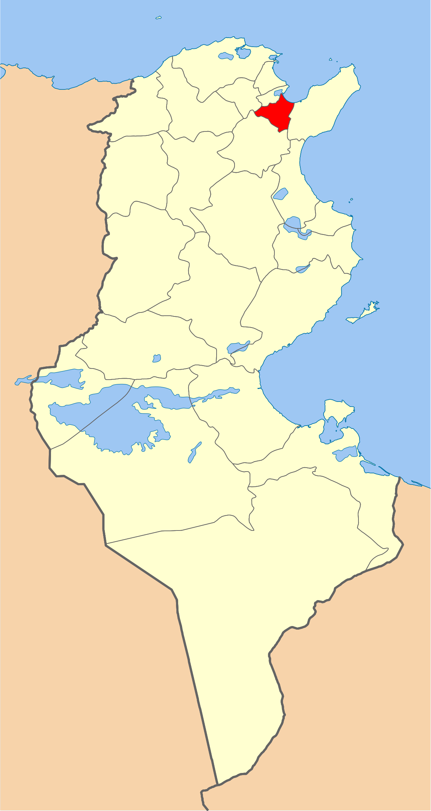
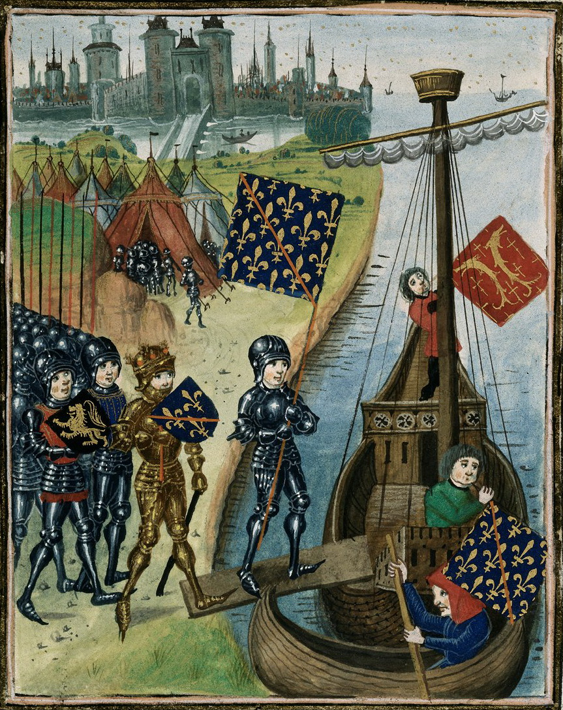
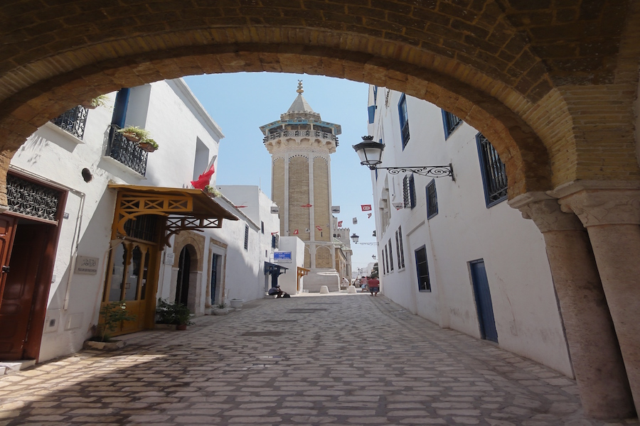
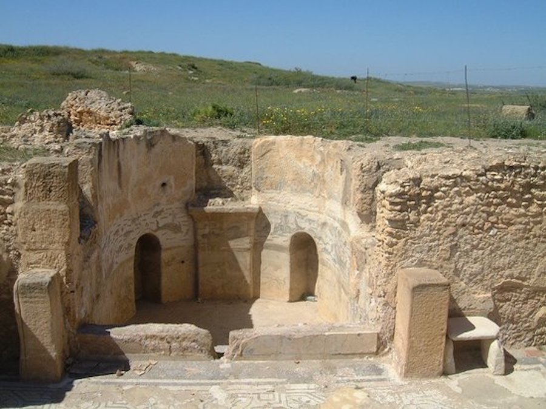
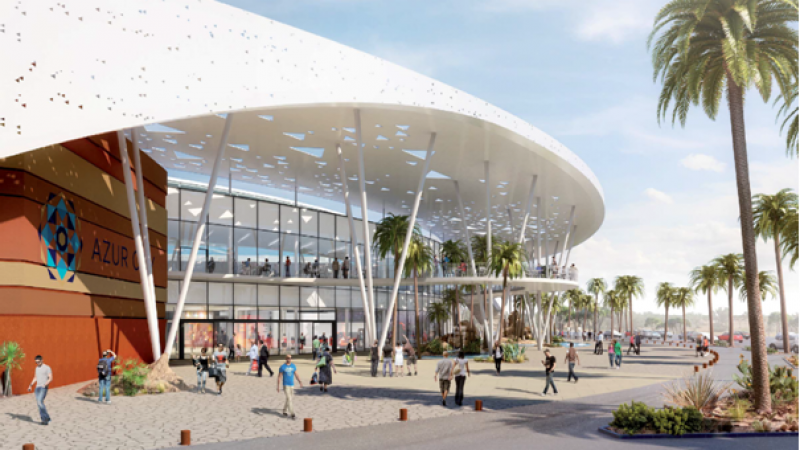
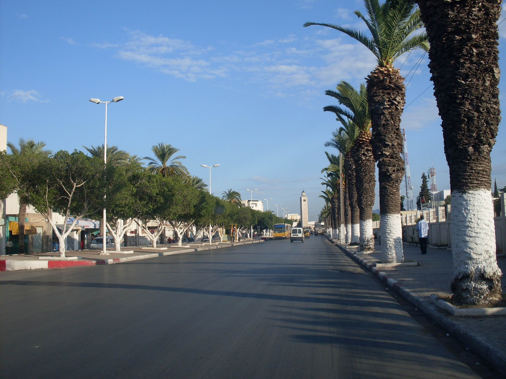

Ben Arous
Le gouvernorat de Ben Arous se situe au sud-est de la région du Grand Tunis et se caractérise par des paysages divers alliant entre la mer, la montagne et des superficies verdoyantes.
Parc farhat hached Rades
Stade Rades
Utique
Azur city
Quelques chiffres
Superficie
761 km²
Nombre de maisons
58 000
Habitants
631 842
Localisation
Situé à dix kilomètres de la capitale, le gouvernorat de Ben Arous est entouré par les gouvernorats de Nabeul à l'est, de Tunis et de La Manouba au nord-ouest, de Zaghouan au sud-ouest et par la mer Méditerranée au nord. Il connait des précipitations annuelles allant de 275 à 515 millimètres. Il se caractérise par des paysages divers alliant la mer, la montagne et des plaines verdoyantes. Administrativement, le gouvernorat est découpé en douze délégations, douze municipalités, six conseils ruraux, 286 comités de quartier et 75 imadas.

Histoire
La plaine de Sidi Fathallah porte le nom d'un saint musulman mort en 1444 et réputé pour guérir la stérilité des femmes. Sa zaouïa donne ensuite naissance à un hameau près duquel passe la route reliant Tunis à Sousse. Cette plaine, qui s'étend entre le Djebel Kharrouba et les collines de Mégrine et de Radès, a certainement été le théâtre de la bataille de l'Ad Decimum, mettant fin à la domination vandale, qui est gagnée par Bélisaire, général de l'armée de byzantine, le 13 septembre 5335. Après la Première Guerre mondiale, Ben Arous porte le nom de Fochville dans sa partie haute (colline au sud-ouest de la voie ferrée Tunis - Bir Kassaâ) et Ben Arous au nord-est de la voie ferrée. La première partie est peuplée pour l'essentiel d'employés de la Compagnie fermière des chemins de fer tunisiens, compagnie dont l'entrepôt se trouve à Sidi Fathallah, alors que la seconde est peuplée essentiellement d'employés qui travaillent à Tunis, de petits commerçants et d'immigrants plus récents qui ont acquis ou non la nationalité française. La plaine entre Ben Arous et Mégrine, au nord-est, et les collines entre Bir Kassaâ et la route de Zaghouan, au sud-est, sont alors occupées par des cultures céréalières, dont le produit est stocké dans les silos à grains de la gare ferroviaire de Bir Kassaâ, et des vignobles.

Culture

hover me
hover me
hover me
hover me